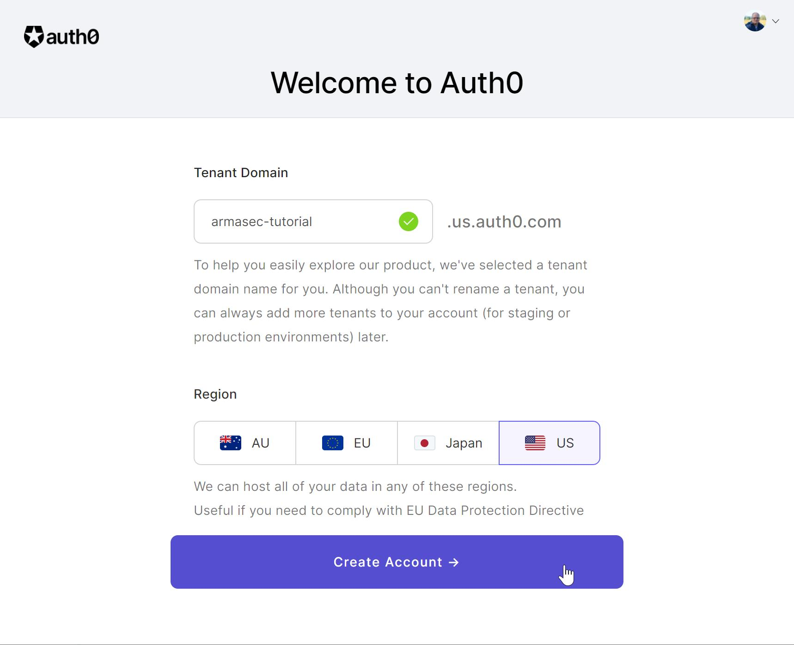
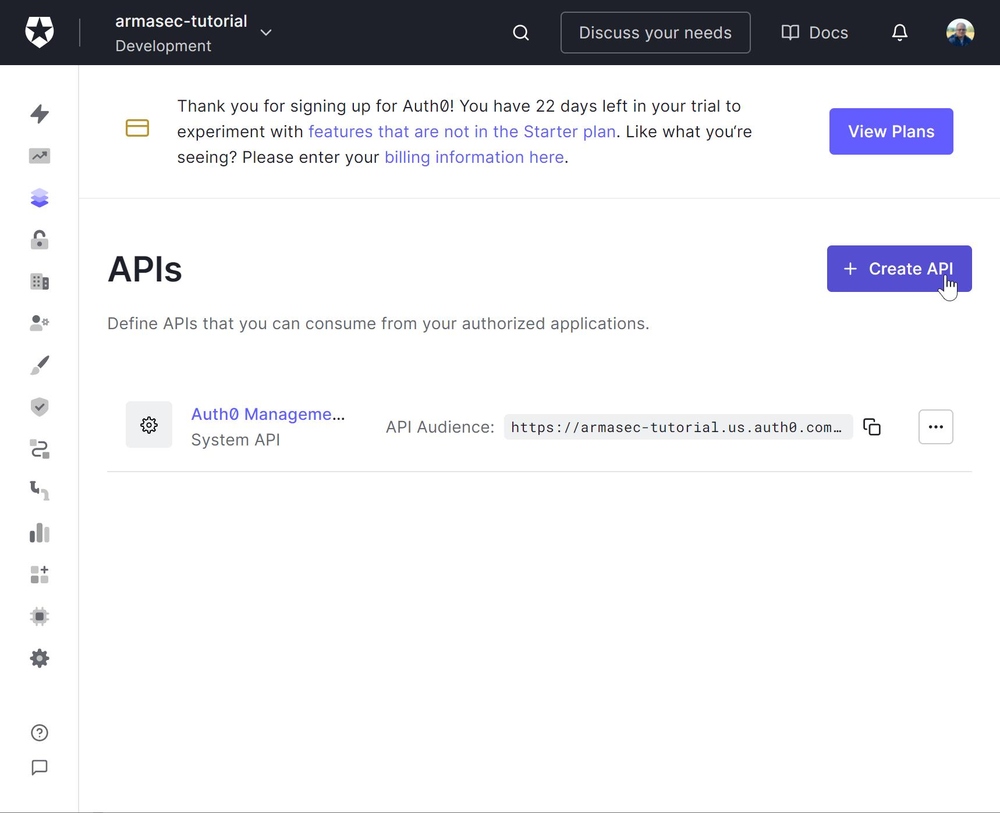

Getting started with Auth0
This step-by-step walk-through will show you how to get an Auth0 account set up for use with the minimal example.
You will need:
- Python 3.8+ installed
- Python packages
armasecanduvicorninstalled
Create Auth0 account tenant
Navigate to Auth0's homepage, and click Sign Up.
Create a new account (if you don't already have one). It doesn't really matter how you choose to sign up, but I used my google account.
 Create a personal account
Create a personal account
For this tutorial, just select a "Personal" account. You can come back and repeat the process for your company later if you need to.
Select I need advanced settings so that you can choose your tenant name, and click Next to
move on to tenant setup.
 Select tenant domain
Select your tenant domain. For this tutorial, I will be using "armasec-tutorial". Choose your region
and click Create Account. The full domain that I will use later is
"armasec-tutorial.us.auth0.com".
Add your API application
This will set up the Auth0 api endpoints that Auth0 will use to authenticate your users.
 Navigate to Applications > APIs
Navigate to Applications > APIs
Click Applications -> APIs
 Create an API
Click Create API
 Fill out API form
Fill out API form
Fill out the form. The Name you choose doesn't matter, but for the tutorial, I used "Armasec Tutorial". Choose a name for the identifier that makes sense, as this will be the "Audience" for your tutorial app. I chose "https://armasec-tutorial.com" for this tutorial.
Leave the "Signing Algorithm" as "RS256". Armasec also supports HS256, but it is not preferred.
Click Create
 Enable RBAC Settings
Enable RBAC Settings
Go to the Settings tab and scroll down to the "RBAC Settings"
Activate Enable RBAC and Add Permissions in the Access Token".
This will include permissions scopes to your users' access tokens.
Click Save
Add your permissions
Next, we will add the permission for the minimal example.
 Add a permission
Add a permission
Click on the Permissions tab and add the "read:stuff" permission.
Grant your permission to the test app
Auth0 provides a "Machine-to-Machine" test app for verifying that log in will work. We will grant our "read:stuff" permission to tokens provided from this app.
 Navigate to Applications
Navigate to Applications
Navigate to Applications -> Applications
 Select tutorial test app
Select tutorial test app
Click on Armasec Tutorial (Test Application)
 Add permission to test app
Add permission to test app
Go to the APIs tab and click the drop-down. Select the "read-stuff" box in the "Permissions" box.
Click Update.
Start up the example app
Copy the example app to a local source file called "example.py".
Start it up with uvicorn:
Try it out
Next, we will try to use a test token to call our minimal example's endpoint.
Navigate back to Applications -> APIs, select the Armasec Tutorial, and go to the Test
tab.
 Copy test access token
Copy test access token
Find the "Response" box. This contains a token that has been issued by your test application. Click
the Copy Token button.
Now, open a browser to "localhost:8000/docs"
 Swagger page for example
Swagger page for example
This will show you the auto-generated swagger docs for the example API app. Click on the
Authorize button to add the token you copied to the clipboard in the header of requests to the
API.
 Add access token in Swagger
Add access token in Swagger
First, type "Bearer " followed by pasting the token from the clipboard into the form and click the
Authorize button in the dialog, click Close to dismiss the dialog. Now, all subsequent calls
to the API will include a header that looks like:
Now, expand the "GET" REST operation on the /stuff endpoint and click Try it out.
 Try it out
Try it out
Finally, click Execute to issue the request to the API.
 Execute
Execute
You should see a response that includes a 200 status code and a response body that includes:
Congratulations! You are now using Armasec and Auth0 to authorize requests to your API.
Tinker
Now, there are a few things you can do to check out how things work. Try the following things:
- Remove the "read:stuff" permission from the test application and try another request
- Try a request without being authorized in swagger
- Try making requests using
curlor thehttpxlibrary in IPython
Send feedback
If the above tutorial didn't work as expected, a step needs better clarification, or you have some questions about it, please create an issue on Armasec's GitHub's issues.